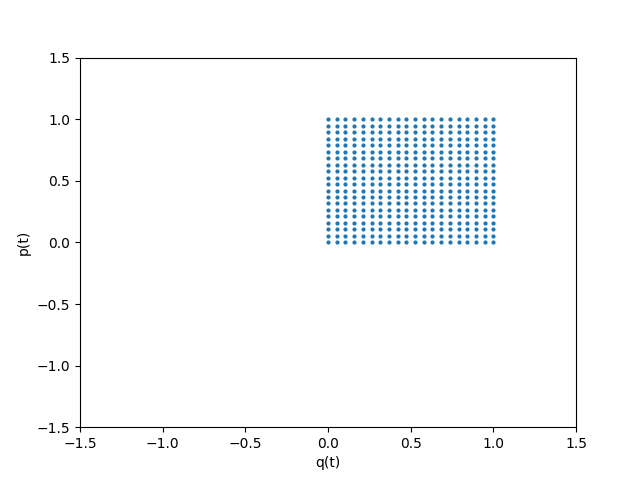

Discretización de Sistemas Dinámicos Continuos y Teorema de Liouville
Introducción
Dado el Hamiltoniano de un oscilador no lineal de ecuación
\begin{equation} \label{eq:1} \left( q, p \right) \mapsto p^2 + \frac{1}{a} \left( q^2 - b \right)^2 \end{equation}nos disponemos a obtener de manera computacional su espacio de fases y las soluciones al problema de valor inicial correspondiente.
Material Usado
Discretización de Sistemas
Realizaremos la discretización del sistema \ref{eq:1} para cerciorarnos de que se comporta bien y tener una aproximación del valor del problema de valor inicial.
\begin{gather*} \ref{eq:1} \implies \begin{cases} \dot{q} &= 2 p \\ \dot{p} &= \frac{\ddot{2}}{2} = - \frac{4}{a}q \left( q^2 - b \right) \end{cases} \implies \begin{cases} \frac{q_{n+1} - q_n}{\Delta t} &\approx 2p_n \\ \frac{p_{n+1} - p_n}{\Delta t} &\approx - \frac{1}{4}q_n \left( q_n^2 - b \right) \end{cases} \implies \end{gather*} \begin{equation} \label{eq:2} \begin{cases} q_{n+1} &\approx 2 p_n \Delta t + q_n \\ p_{n+1} &\approx - \frac{4 \Delta t}{a} q_n \left( q_n^2 - b \right) + p_n \end{cases} \end{equation}Gnuplot
Utilizaremos el programa gnuplot en el apartado uno para generar una gráfica del espacio de fases, la elección de plotters se debe únicamente a preferencia del implementador, se podría usar intercambiablemente el módulo de python matplotlib.
Módulos de Python
Scipysolve_ipv: Utilizaremos esta función para resolver el problema de valor inicial, en lugar de la discretización usando el método de euler, por estar mas optimizada que una implementación propia.
ShapelyPolygon: Usaremos esta función para construir un polígono dado un conjunto de puntos ordenados que definan su perímetro para calcular en el apartado dos.
Matplotlibscatter: Por su simple uso para visualizar rápidamente nubes de puntos.animationPara proporcionar una animación del espacio de fases según el método requerido por el cliente.
Resultados
Espacio Fásico

Evolución Temporal
Observamos la evolución temporal de la región \( D_0 := \left[ 0, 1 \right] \times \left[ 0, 1] \right] \) con una granularidad del parametro temporal \( t = n\delta \) con \( \delta \in \left[ 10^{-4}, 10^{-3} \right]\) y \( n \in \mathbb{N} \) en el fichero .gif adjunto.

Conclusiones
Error en las Areas
Tras comprobar la variación en el area modificando el parámetro de granularidad temporal y el de granularidad espacial entre 20 y 120, podemos concluir que el error inducido en el area por la granularidad temporal es menor que el inducido por la granularidad espacial de los valores iniciales y en ambos casos nos da un error de menor magnitud que la tolerancia del método de integración, que es 1e-6, por lo que se cumple el Teorema de Liouville.
Teorema de Liouville
Los calculos computacionales con \( t = 1/4 \) indican que el Teorema de Liouville se cumple entre \( D_0 \) y \( D_t \) para \( t \) finito, sin embargo no se cumple entre \( D_0\) y \(D_{(0,\infty)} \) ya que, por definición \(D_{(0,\infty)} \) es \( \cup_{t \in (0, \infty)} D_t \) y esto sólo se cumpliría si nuestro sistema consituyese un automorfismo al considerar su imagen en \(D_0\), que no es el caso.
Apéndice de Código
Python Script
Cálculos
import os import numpy as np import math import matplotlib.pyplot as plt import matplotlib.animation as ani from shapely import Polygon from functools import partial from scipy.integrate import solve_ivp from numpy.typing import ArrayLike from typing import Callable def get_vector_field(func: Callable, t0: float, min_x: float, max_x: float, min_y: float, max_y: float, granularity: int, separation: float = 0.8): vector_field_grid_x = np.linspace(min_x, max_x, granularity) vector_field_grid_y = np.linspace(min_y, max_y, granularity) vector_lenght_x = separation * (max_x - min_x) / granularity vector_lenght_y = separation * (max_y - min_y) / granularity vector_field = np.array([(p, q, (vector_lenght_x * fpq[0] / math.sqrt( fpq[0] ** 2 + fpq[1] ** 2)), (vector_lenght_y * fpq[1] / math.sqrt( fpq[0] ** 2 + fpq[1] ** 2))) for p, q, fpq in [(xi, yi, func(t0, (xi, yi))) for xi in vector_field_grid_x for yi in vector_field_grid_y]]) return vector_field def get_area_at(orbit_data: ArrayLike, i: int) -> float: """ Calculates the area of the region described by 'orbit_data' at the time corresponding to the i-th component. It requires the data to be monotonously increasing for each given time. """ right_side = np.stack((orbit_data['q'][i, 0, :], orbit_data['p'][i, 0, :]), axis=1) top_side = np.stack((orbit_data['q'][i, :, -1], orbit_data['p'][i, :, -1]), axis=1) left_side = np.flip(np.stack((orbit_data['q'][i, -1, :], orbit_data['p'][i, -1, :]), axis=1), axis=0) bottom_side = np.flip(np.stack((orbit_data['q'][i, :, 0], orbit_data['p'][i, :, 0]), axis=1), axis=0) area = Polygon(np.concatenate((right_side, top_side, left_side, bottom_side))).area return area def get_area_variation(orbit_data: ArrayLike, i: int, j: int) -> float: """ Calculates the absolute value of the variation of the area of the region described by 'orbit_data' at the time corresponding to the i-th component respective to the j-th component. It requires the data to be monotonously increasing for each given time. """ initial_area = get_area_at(orbit_data, i) final_area = get_area_at(orbit_data, j) return abs(initial_area - final_area) def grid_solve_ipv(func: Callable, initial_q_values: ArrayLike, initial_p_values: ArrayLike, time_values: ArrayLike) -> ArrayLike: """ Calculates the temporal evolution of the given function given an initial region and a set of time values to compute it. """ orbit_data = np.zeros((len(time_values), len(initial_q_values), len(initial_p_values)), dtype=[('q', 'f'), ('p', 'f')]) for i, q0 in enumerate(initial_q_values): for j, p0 in enumerate(initial_p_values): orbit_data['q'][:, i, j], orbit_data['p'][:, i, j] = \ solve_ivp(func, [time_values[0], time_values[-1]], (q0, p0), t_eval = time_values).y return orbit_data # The function to integrate def general_orbit(t: float, z: (float,float), a: float, b: float) -> (float, float): q, p = z return [2* p, - (4 * q / a) * (q * q - b)] # a = 3, b = 1/2 A_ORBIT_PARAMETER = 3 B_ORBIT_PARAMETER = .5 orbit = partial(general_orbit, a = A_ORBIT_PARAMETER, b = B_ORBIT_PARAMETER) def apartado1(): """ Solve first request. """ initial_parameter_min_x = -1.5 initial_parameter_max_x = 1.5 initial_parameter_min_y = -1 initial_parameter_max_y = 1 vector_grid_granularity = 51 initial_time = 0 final_time = 10 time_increment = 1e-3 time_values = np.arange(initial_time, final_time, time_increment) initial_values = ([[p0, 0.1] for p0 in np.linspace(-1, 1, 19)] + [[0.1, q0] for q0 in np.linspace(-1, 1, 19)]) vector_field = get_vector_field(orbit, 0, initial_parameter_min_x, initial_parameter_max_x, initial_parameter_min_y, initial_parameter_max_y, vector_grid_granularity) sol = np.column_stack([solve_ivp(orbit, [initial_time, final_time], p0q0, t_eval=time_values, ).y.T for p0q0 in initial_values]) orbits_data = np.column_stack((time_values, sol)) np.savetxt("vector_field.dat", vector_field, header= "# grid_x grix_y dx/dt dy/dt", fmt=['%.5f', '%.5f', '%.5f', '%.5f']) np.savetxt("orbits.dat", orbits_data, fmt="%.5f") def apartado2(): """ Solve second request. """ # t ϵ (0, 1/4) initial_time = 0 final_time = 1/4 # we define d_0 = [0, 1] x [0, 1] min_q_value = 0 max_q_value = 1 min_p_value = 0 max_p_value = 1 time_granularities = np.linspace(1e-4, 1e-3, 10) spatial_granularities = np.linspace(20, 120, 20, dtype='int') area_variation = np.zeros((len(time_granularities), len(spatial_granularities)), dtype='f') for i, time_granularity in enumerate(time_granularities): for j, spatial_granularity in enumerate(spatial_granularities): time_values = np.arange(initial_time, final_time, time_granularity) spatial_q_values = np.linspace(min_q_value, max_q_value, spatial_granularity) spatial_p_values = np.linspace(min_p_value, max_p_value, spatial_granularity) area_variation[i, j] = \ get_area_variation(grid_solve_ipv(orbit, spatial_q_values, spatial_p_values, time_values), 0, int(1 / (4 * time_granularity)) - 1) return np.savetxt('apartado2.dat', area_variation, fmt="%.6f") def apartado3(): initial_time = 0 final_time = 5 time_increment = 1e-4 time_values = np.arange(initial_time, final_time, time_increment) grid_q_granularity = 60 grid_p_granularity = 60 min_q_value = 0 max_q_value = 1 min_p_value = 0 max_p_value = 1 initial_q_values = np.linspace(min_q_value, max_q_value, grid_q_granularity) initial_p_values = np.linspace(min_p_value, max_p_value, grid_p_granularity) orbit_data = grid_solve_ipv(orbit, initial_q_values, initial_p_values, time_values) fig = plt.figure() moving_square = plt.scatter([],[], s= 4) plt.xlim(-1.5, 1.5) plt.ylim(-1.5, 1.5) plt.xlabel('q(t)') plt.ylabel('p(t)') def AnimationFunction(frame): moving_square.set_offsets(np.stack((orbit_data['q'][frame].flatten(), orbit_data['p'][frame].flatten()) ,axis = 1)) anim_created = ani.FuncAnimation(fig, AnimationFunction, frames=np.arange(0,len(time_values),100)) anim_created.save('anim.gif') apartado1() apartado2() apartado3()
Plot
outfile = 'apartado1.svg'
set terminal svg
set key off
set output outfile
set xlabel 'q(t)'
set ylabel 'p(t)'
set xrange [-1.5:1.5]
set yrange [-1:1]
plot 'vector_field.dat' using 1:2:3:4 with vectors, \
for [i=1:38] 'orbits.dat' using (column(2*i)):(column(2*i+1)) with lines